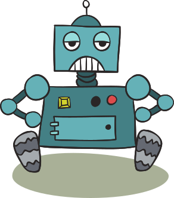
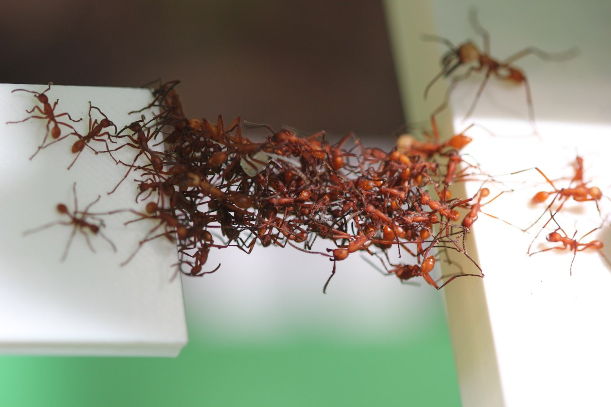
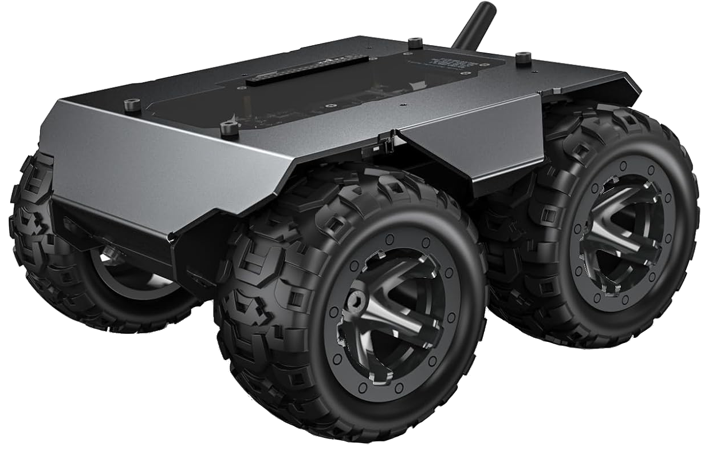

Ecosistemi coordinati
di robot programmabili

Gianluca Aguzzi, Martina Baiardi, Roberto Casadei,
Davide Domini, Nicolas Farabegoli, Danilo Pianini, Mirko Viroli

Davide Domini, Nicolas Farabegoli, Danilo Pianini, Mirko Viroli




Una piccola dimostrazione

Abbiamo un robot speciale denominato leader, che guida gli altri, ottenendo un sistema auto-organizzante:
- Tutti i robot puntano verso la stessa direzione
- Tutti i robot puntano verso il leader
- I robot “danzano” in modo coordinato, raggiungendo la stessa direzione puntata dal leader
- Formazioni di semplici strutture: tutti i robot si dispongono in linea e in cerchio rispetto al leader.